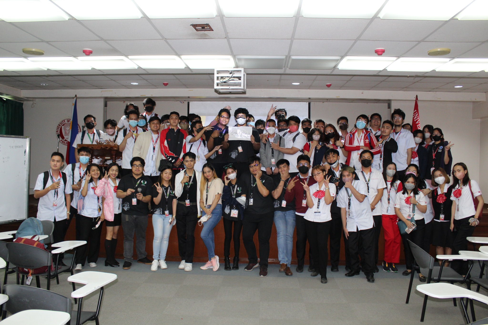
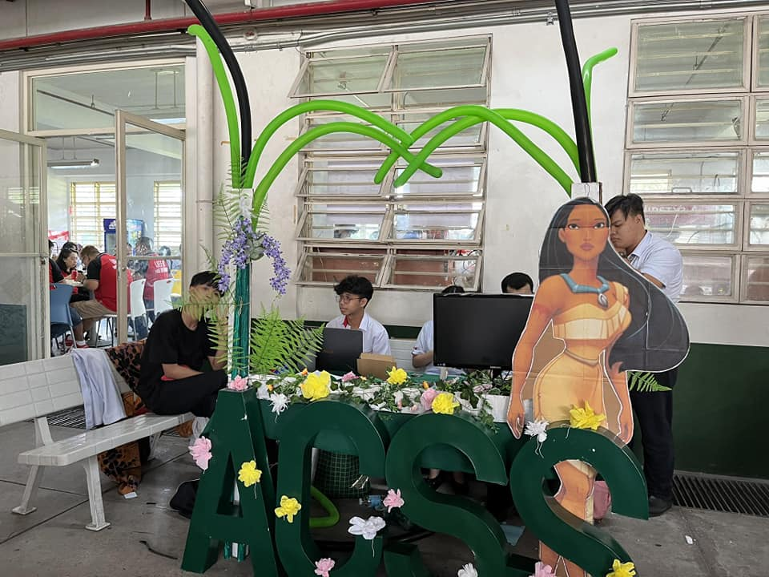
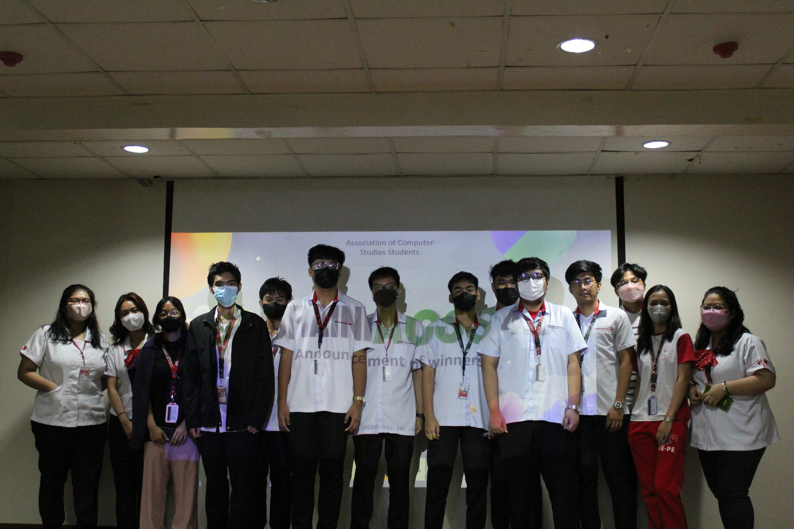
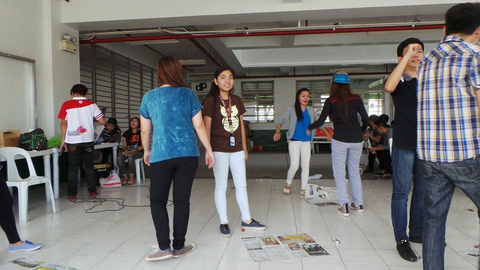

General Assembly
Annually, the General Assembly marks the start of a new academic year. Hosted by newly elected officers, the organization invites members, both old and new, to commemorate a new set of management. Think of it as a directive meeting to understand the community more, its purpose, and roles.
Read MoreRSO Week and Recruitment Week
These weeks enable the organization to promote itself and endorse the organization to first-year level students and to higher-level students who seek membership under ACSS. Commonly done as an amalgamation between other Recognized Student Organizations and University-Wide Organizations, the primary goal of these weeks is to strengthen the organizational identity of the students.
Read MoreSeminars

As the most frequent activity of the organization, seminars, whether hosted online or not, are central to the organization's mission. By inviting professionals and past leaders of the organization, seminars related to computing and technology take place. Topics include web development, web designing, the future of Artificial Intelligence, and networking.
Read MoreMentorships
In collaboration with the senior high school department, ACSS moderates sessions that teach senior high school students the fundamentals of programming. Although focused on ICT students, other strands are also invited.
Read MoreYear-End Party
The year-end party takes place as a celebration of the organization's success for the last term. It includes not just the officers, but also the members, to have fun, rekindle connections, and appreciate the organization as an entity that anchors both their interests and community.
Read More